How this works, and how to use it
A guide for the offline editor in this folder. Double-click index.html to open the app. Double-click docs.html to open this page. The same folder has Giving You the Gears, which writes a printable gear, and STL to SVG, which turns a solid into a cutting drawing. The gear guide and the cutting guide are below.
Read this before you cut
This tool is not a Makera product. It is an independent project. Makera did not make it, does not endorse it, and does not support it.
There are no guarantees. This app is still in beta testing. A file it writes can be wrong. A wrong file can snap a bit, gouge the part, or damage the machine.
Check the path on screen, and check the saved file, before you tool. Watch the moves. Confirm the tool, the origin, and the clearance. Do that every time, including on a file that worked yesterday.
The author takes no responsibility for issues that arise from using this app. Use at your own risk.
What the editor is
The editor opens a Makera Z1 .nc file and draws the toolpath. You can play it, park at a percent and save the rest, place drill holes and threads, or keep and drop regions of an existing path. It runs in the browser on your computer. It does not connect to the machine, and it does not send a file anywhere.
You save a new .nc file, then open that file the way you already open Makera Studio files. The saved file can still contain a machine line that says Makera Z1. That line is there so the controller accepts the file. It does not mean Makera made this editor.
Dotted names in the app have a short explanation. Hover one when a setting is unfamiliar.
The screen
Open NC, or drop a file on the window. A large file can take a moment. The plate and the path then show in the view.
- Top looks down on the plate. Drag to slide the view. The wheel zooms. Double-click, or Fit, frames the part. Drawing a patch shape switches to this view.
- Iso is the 3D view. Drag to orbit. The turn goes over the top and underneath. Shift-drag, or the right mouse button, slides the view. The buttons on the right jump to Top, Front, Right, Back, Left, or Bottom. Drag from any of those to keep turning. The Top button on the left is the flat view used for a patch.
- Paths shows or hides the cutting moves. Rapids shows or hides the fast travel moves. Stock shows or hides the plate. The color bar is the depth of the cutting moves.
- Rotary appears when the file has a 4th axis. It is described below.
On a flat job, coordinates are millimeters from the front-left corner of the top of the plate. X goes to the right. Y goes toward the back. Z is up. Zero on Z is the top surface, and cutting goes down into negative Z.
Play runs the path. The speed menu is how fast the picture runs, from 1× up to 5000×. The slider and the Go to box park at a percent of the path time. On a regular job, each stretch the bit has already run drops away, the same as a 4th-axis job. What is left is the path still to cut. A finishing solid stays on screen. Prev lift and Next lift jump between retracts. The readout shows X, Y, Z, the tool, the feed, the spindle, and the current line. A rotary file also shows A, the angle of the wood in degrees.
Space starts and stops play. The left and right arrow keys nudge the playhead. Shift makes that nudge larger. Home and End jump to the start and the end. F frames the part.
The list under Job is one row per toolpath. Click the name to jump the playhead to that tool. The checkbox beside the name is for patches, described below.
Save from a percent
Play or scrub until the picture is where the cutter should start again. The filename becomes the percent, so 40% wants to save as Makera_40_redo.NC. You can type another name. Use the percent name puts the percent name back.
The saved file is a restart, not a chopped copy of the original. It selects the tool that was in use at that moment, starts the spindle, raises to clearance, travels to the restart X and Y, feeds down, and then runs the rest of the path. The Z1 may pause for a tool change before it moves. Confirm the work origin and the tool in the spindle before you run it.
Saving at 0% writes the whole program that is on screen. If you have applied a patch, that whole program is the patched one. Saving later in the file writes a restart of whatever is on screen.
A 4th-axis file restarts at an end of the X travel, the axis that runs along the rotary shaft. Park in the middle of a pass and the file looks backward to the last time the bit was lifted at an end of that trip. The percent in the name can be earlier than the percent on the slider. A park at 50% may save as 45% or 40%. The bit goes to clearance at that end, the angle is set there, and only then does the file feed down.
A finish that creeps along the shaft in one spiral, and does not come back to an end until it is done, starts again at the beginning of that finish. The whole finish is cut again. The angle reset that was already at that start is in the file, so the rotary is not sent back through the running total. Saving at 0% still writes the whole program. Watch the start of the redo before you tool.
Drill holes
Place hole drops a hole on the plate and selects it. A later hole copies the size, depth, peck, feed, spindle, and tool of the one you had selected, and it is offset so the holes do not stack. Each hole then keeps its own settings. Changing hole 2 does not change hole 1.
Select a hole in the list. X and Y move it. The slider steps by 0.1 mm. The number box under each slider is exact to 0.001 mm.
- Size is a list of common drills, including the pilot hole for each common thread. M3 is a 2.5 mm hole. M6 is a 5 mm hole. 3.175 mm is a 1/8 inch drill. Custom is any other diameter.
- Diameter is the width of the hole, in millimeters. Match it to the bit.
- Depth is how far the tip goes below the top of the plate.
- Peck is how far the drill cuts before it lifts to clear chips. Peck 1 means drill 1 mm, pull up, then drill the next 1 mm. A deep hole in one push packs chips and can snap a small bit.
- Feed is how fast the drill pushes down, in millimeters per minute.
- Spindle is how fast the bit spins.
- Tool is the tool slot, T1, T2, and so on. Give each bit its own number so the machine stops between bits. Holes that share a number are drilled with the same bit.
- Through the plate drills the stock thickness plus 0.5 mm. Load a program first so the thickness is known.
Clear this hole removes the highlighted hole. The Delete key does the same when you are not typing in a box. The other holes stay.
Save drill file writes a new NC file. The holes are peck-drilled with ordinary moves. The file name reflects the count and the size, such as Makera_4holes_3.175mm.NC.
Threads
Thread this hole opens the thread screen for that hole only. The hole and the thread are two different cuts, with two different bits. The drill makes a plain pilot. After the pilots, the file stops so you can put in a thread mill. The thread mill is smaller than the pilot. It drops into the center and spirals around to cut the grooves.
This is not a tap. The Z1 spindle is not locked to the Z move, so the file does not use a tapping cycle. The spiral is written as small straight moves.
The thread list shows the screws whose pilot matches the hole you drilled. A 2.5 mm hole offers M3. A 5 mm hole offers M6. If the hole is not a standard pilot, the list is Custom, and the note names the nearest screw. You can still type the numbers. Set the hole to this pilot writes that pilot into the hole diameter.
The thread mill must be smaller than the pilot, and its tool number must be different from the drill. The thread must not be deeper than the hole. Move the hole and the thread moves with it. Save drill file drills every pilot first, then cuts the threads with the other bit. A file of one shared screw is named for that screw, such as Makera_4threads_M3.NC.
Patch a region
A patch decides which existing cuts to keep. It does not draw a new outline for the machine to follow. A circle keeps or drops the toolpath that already falls inside that circle. It does not mill a circle.
Use it when one spot on a finished plate needs to be recut, or when one region is already good and should be left out of the new file. The pictures here are a coin relief. The same steps work on any flat job.
Switch to Top. Press Paths so the cuts are drawn. Choose a shape.
- Rectangle. Drag from one corner to the opposite corner.
- Circle. Drag from the center out to the rim.
- Polygon. Click each corner. Click the first corner again, or press Close polygon.
The shape stays a draft until you press Apply. A draft is dashed, and the list says draft. Play and save still use the loaded path. Nothing has been added or subtracted.
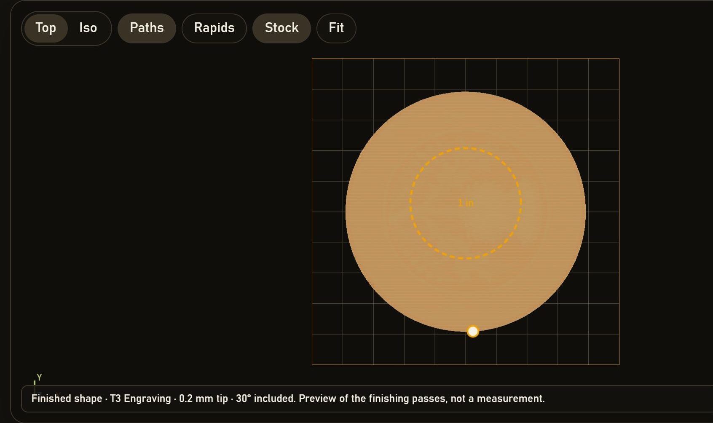
X and Y move the center. Size is the width in millimeters. For a circle, size is the diameter. A rectangle or polygon keeps the proportion you dragged. Keep chooses what the shape does.
- Inside keeps the cuts in the shape and drops the rest. The rest of the plate is left alone, and the file you save recuts that patch.
- Outside drops the cuts in the shape and keeps the rest. A region that is already good, or that you do not want cut again, is left out of the new file.
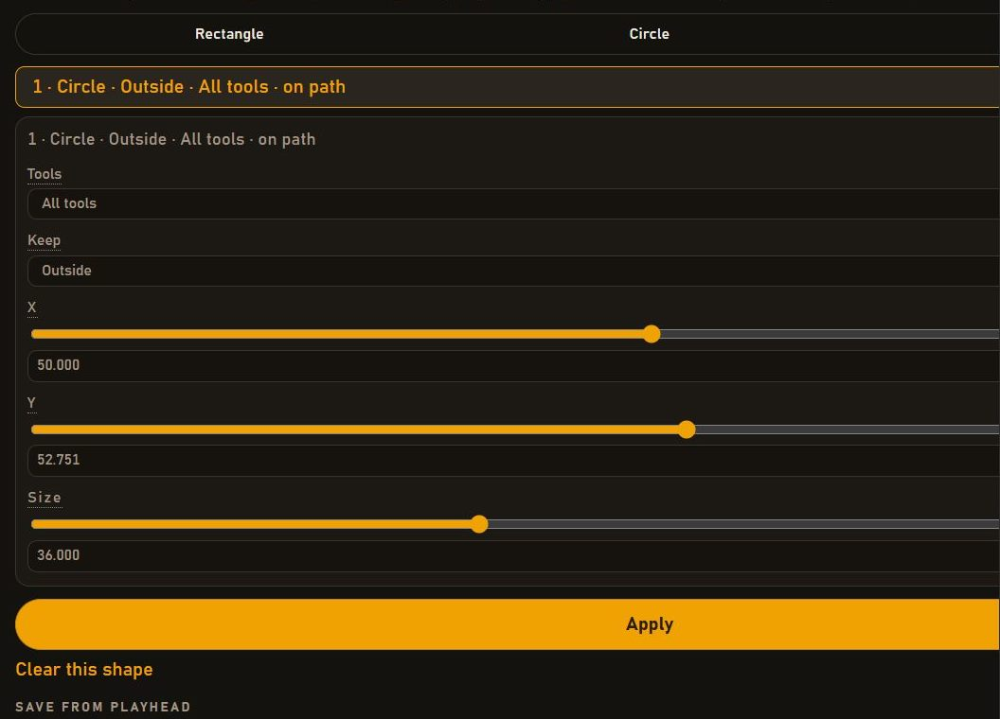
A line that crosses the edge is split there. Between the pieces that remain, the bit lifts to clearance, travels, and feeds back down. After Apply the outline is solid and the list says on path. The view labels the shape. Inside reads 1 in. Outside reads 1 out.
Inside, on this coin, leaves the round piece and drops every cut outside it.
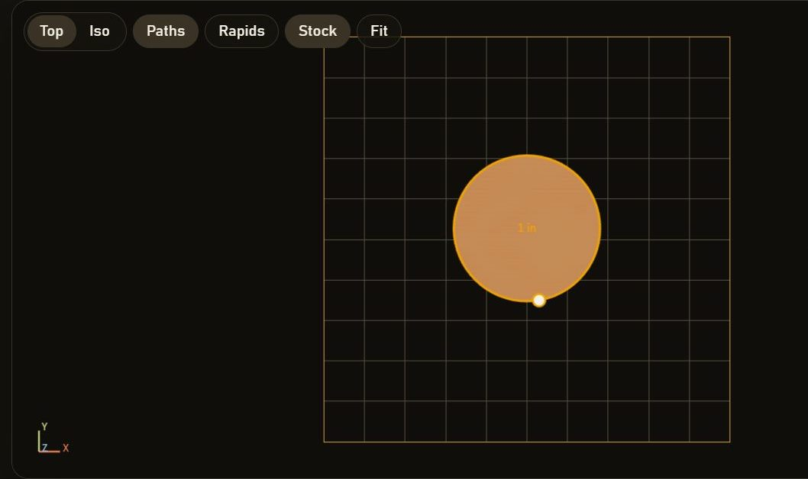
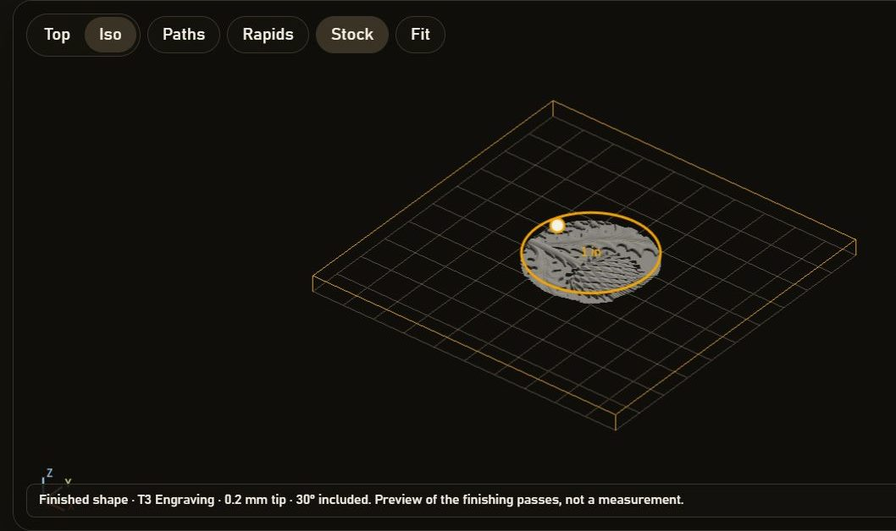
The same circle, with Keep set to Outside and Apply pressed again, does the opposite. The cuts inside the circle are dropped. The rest of the coin stays, with a round hole where the circle was.
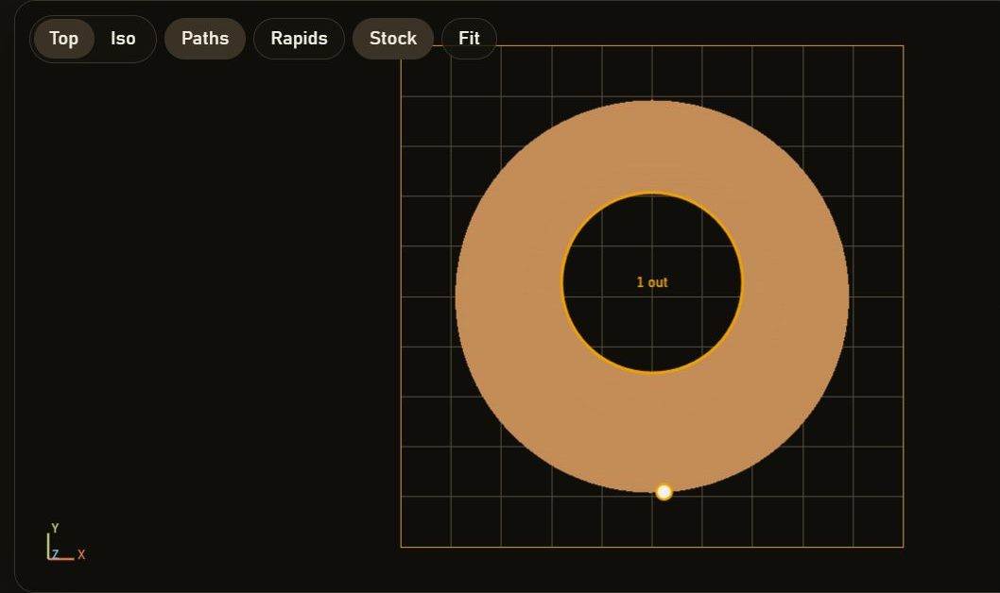
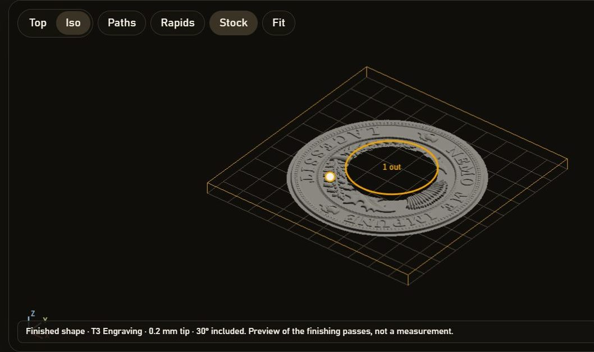
The checkboxes in the job list choose the tools. Check one row, or several. Set Tools to Checked tools, and Apply cuts only those tools. The other tools stay whole. All tools, which is what these pictures use, cuts every bit. Clicking the name of a row still jumps the playhead. The checkbox is the patch choice.
If you move a shape after applying it, the path stays put until you press Apply again. Clear this shape removes that shape. A draft that was never applied leaves the path alone. A shape that was applied is taken back out, and the path is rebuilt without it. A shape that would remove every cut is refused, and the path is left as it was.
After Apply, save from the playhead writes the path you are looking at. Check that picture before you tool.
A flat relief
A file with a finishing pass, and no 4th axis, opens in Iso as a solid. The solid is built from the finishing passes. Roughing and an outline cut stay out of it, so the picture is the finished face. The caption names the tool and the tip. It is a preview of those passes, not a measurement.
Paths starts off, so the cut lines do not cover the solid. Press Paths to draw them. Rapids starts off for the same reason. Press Rapids to see the fast travel. Top goes back to the lines. That is the view for drawing a patch.
Play, or move the slider, and each stretch the bit has already run drops away. The solid stays. The buttons on the right of the Iso view jump to Top, Front, Right, Back, Left, or Bottom. Drag from any of those to keep turning. This picture does not change feeds or speeds.
A 4th-axis job
A rotary file turns the wood on a lathe that sits inside the machine. The bit stays above the blank and moves in X, Y, and Z. The A word is how far the wood has turned, in degrees. Z is the height of the bit above the center of that spin.
Open a file that contains A moves and the view switches to Iso, with Rotary on. The cylinder is the round stock. The square around it is the block that stock was taken from. The dot is the bit, and it stays on top. The wood, and the path drawn on the wood, turn underneath it. Drag to orbit. Rotary off shows the flat cross section, the same moves with no spin.
At the start you see the whole path. Play, and each stretch the bit has already run disappears, so the stock shows through. The last pass is drawn as a solid that follows the tip of that pass, using the tip size from the file. Scales, grooves, and thin fins stay where the bit put them. The caption names the tool. It is a preview of that pass, not a measured part. When the job reaches 100%, that shape is what remains. Rotary off goes back to the lines, including the last pass.
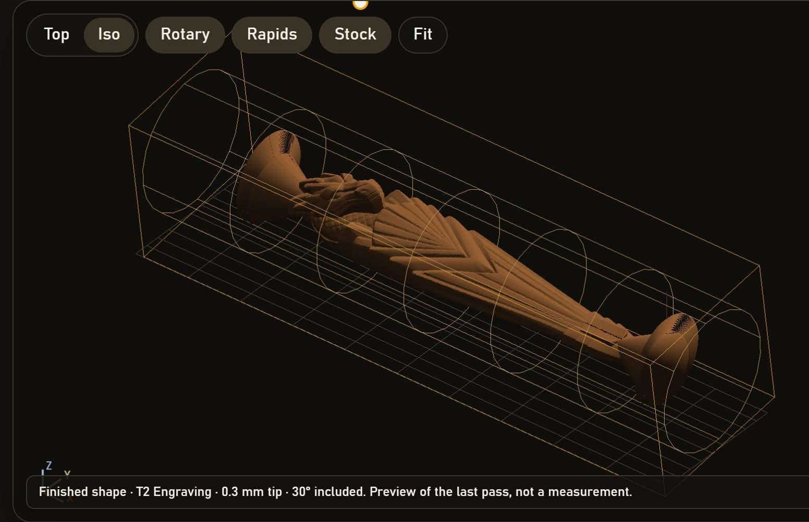
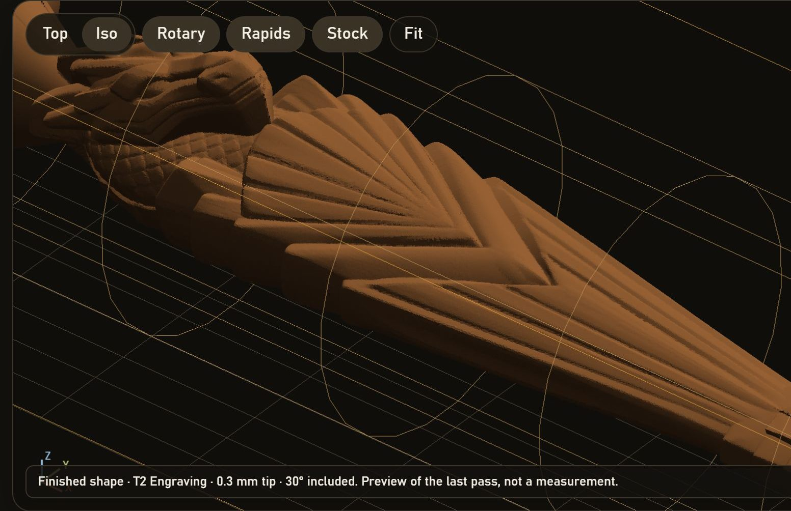
This picture does not change feeds, speeds, or the rotary settings. A redo from partway through is described in Save from a percent. It starts at a lifted end of X, with the angle set before the bit feeds down. A finish that never returns to an end of X is cut again from the beginning of that finish.
Open the saved file in Makera Studio
This editor writes a file. Makera Studio is the program that runs it on the machine. The pictures in this section are Makera Studio.
Press Open and choose the file you just saved.
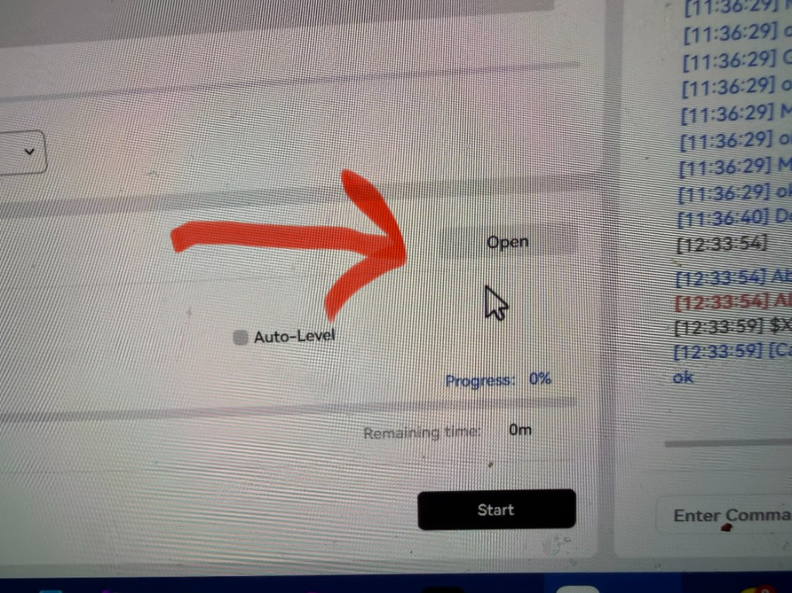
Before you press Start, turn on Auto Z-Height Probing and set Relative to Work Origin. Set the height only. An edited file may already have removed material from the part. The height has to be read at the work origin. A reading taken anywhere else, including the path origin, is taken on a surface the file no longer expects. That wrong height can drive the bit into the work.
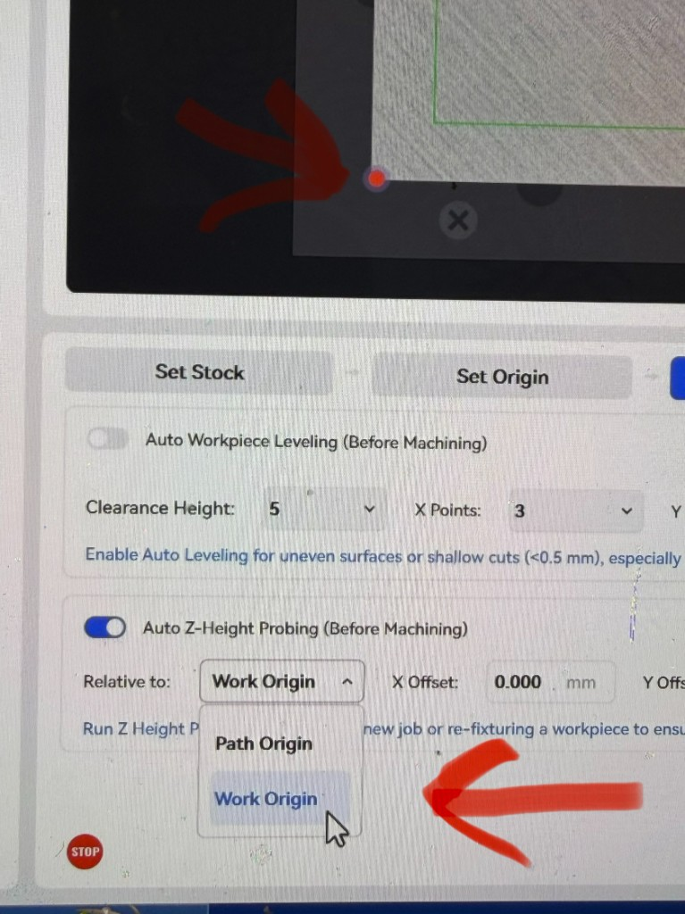
Before a tool goes in the spindle
- You are opening the file you just saved, and you know whether it is a redo, a drill file, or a patched path.
- The tool number in the file is the bit you are about to put in the spindle. A thread file will stop and wait for a second bit.
- In Makera Studio, Auto Z-Height Probing is on and Relative to is Work Origin, so the height is read at the work origin.
- The work origin on the machine is the same corner this picture uses.
- Clearance is high enough to cross clamps, fixtures, and the part.
- You have watched the start of the path, above the material if you can.
This app is beta software from an independent project. It can be wrong. Checking the path is part of using it.
Names of saved files
| File | What it is |
|---|---|
Makera_40_redo.NC | Restart from 40% of the path that was on screen. |
Makera_4holes_3.175mm.NC | Four holes, one diameter. |
Makera_4holes.NC | Holes of more than one diameter. |
Makera_4threads_M3.NC | Holes that all carry the same thread. |
Makera_4holes_threaded.NC | Threaded holes that do not all share one screw. |
Make a gear
Double-click giving-you-the-gears.html. It writes an STL for a printer. The spindle checklist above is for NC files from the editor. A gear file is millimeters, with Z up. A spur, helix, rack, or ring lies flat. A worm lies on its side. A bevel stands on its large end.
Start the backlash at 0.15 mm so a printed pair has room to turn. Wait until the notes say Closed solid. Ready to save. A red note means the teeth do not fit. Change the number it names, then save. Dotted names explain themselves when you hover them. Paper is the drawing. Dark, Warm summer, and Cool autumn are the same gears in other colors.
A first gear
Press 30 tooth. Leave Teeth at 30 and Module at 2. Set Backlash to 0.15 before you print. Module is the tooth size in millimeters. A bigger module makes a bigger, stronger tooth.
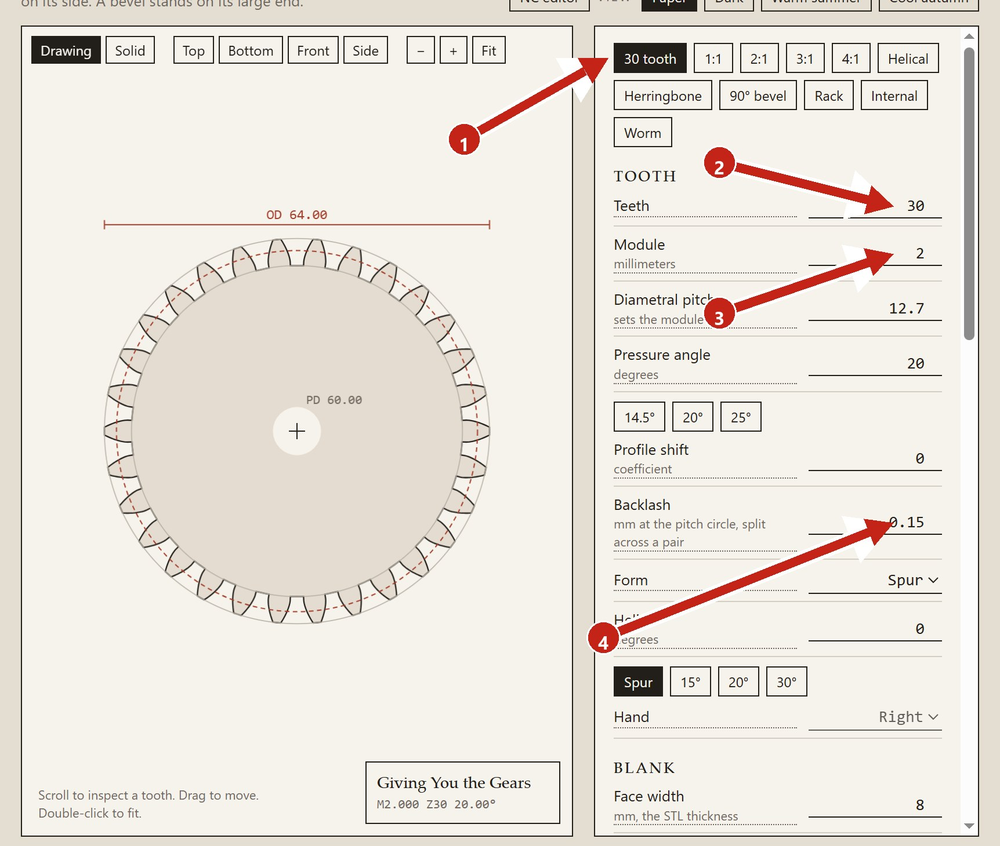
Scroll the panel until the notes turn green, then press Save gear STL. The file name starts with the part, then the tooth count and the module. This one is gear-z30-m2-pa20.stl.
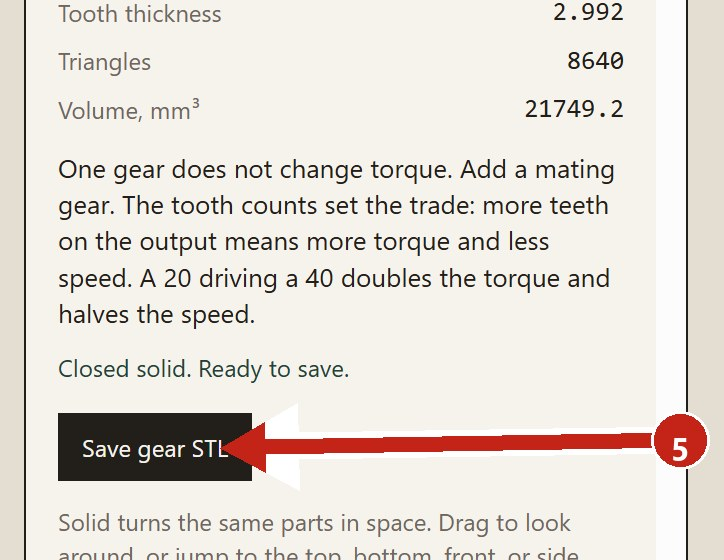
A pair
Press 2:1. That is a 20 tooth gear driving a 40. At module 2 the center distance is 60 mm, the CD line under the drawing. The teeth meet with a small gap. Save each gear with its own button. The mating gear's file is the second save.
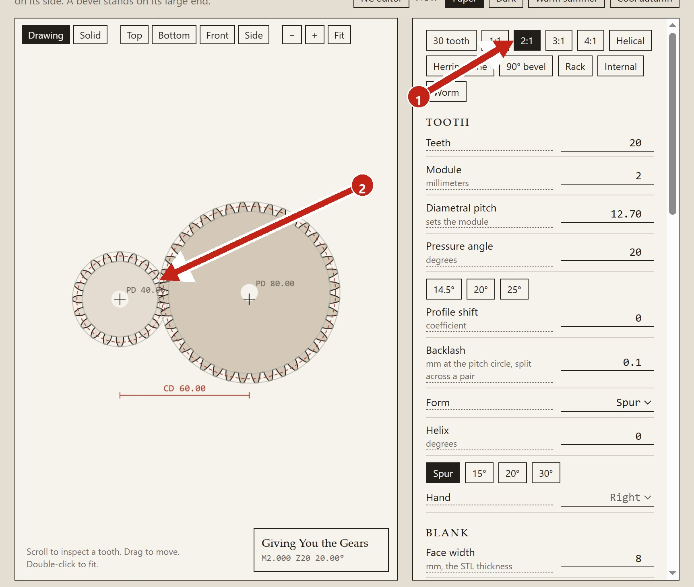
Press Solid to turn the pair. Drag the gears. Side, Front, Top, and Bottom jump to that face. The wheel zooms. Double-click, or Fit, frames them. Drawing returns to the shop drawing. Look at the solid before you print, so a bore, a face width, or a lean is the one you wanted.
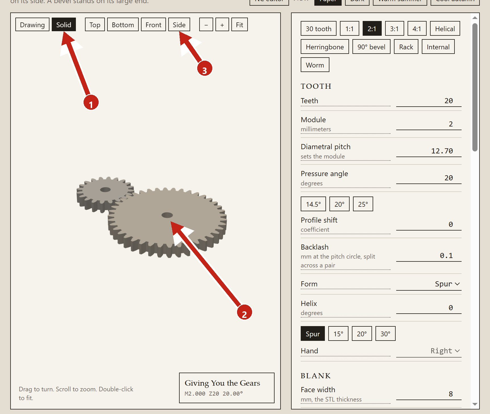
Other forms
The buttons under the ratios switch the form and fill in a working pair. Each one already has backlash. Check the green line, look at the solid, then save each part. One outside mesh is happiest from about 1:1 to 5:1. For more reduction, stack 3:1 stages, or use a worm.
Herringbone. Press Herringbone, then Side. The teeth lean one way and then the other, so the thrust cancels. Helical is the same lean without the V. Press Helical and the mate's hand flips itself. Parallel shafts need opposite hands.
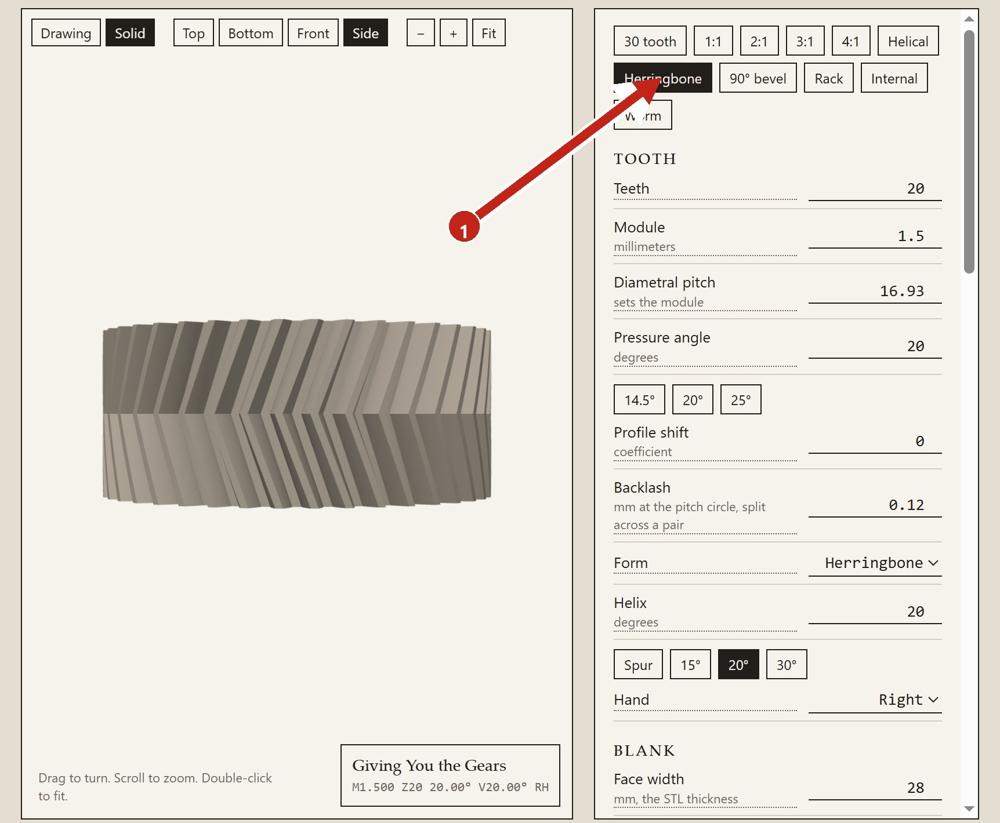
90° bevel. Press 90° bevel. The shafts meet at a right angle. The large end is the bottom of the STL, so the gear stands on that face when you print it. Equal teeth make a miter, both cones at 45°.
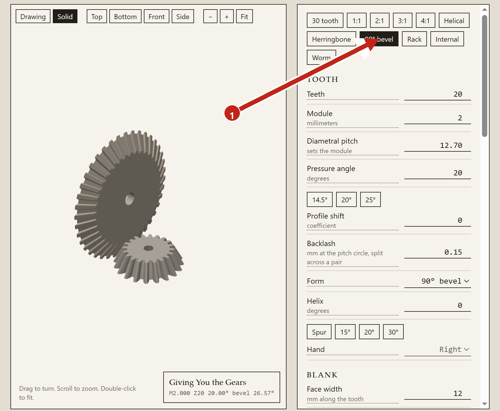
Rack. Press Rack. The pinion rolls along a straight bar. One turn of a 20 tooth pinion at module 2 moves the bar 125.7 mm. The rack has no center hole. Its file name starts with rack.
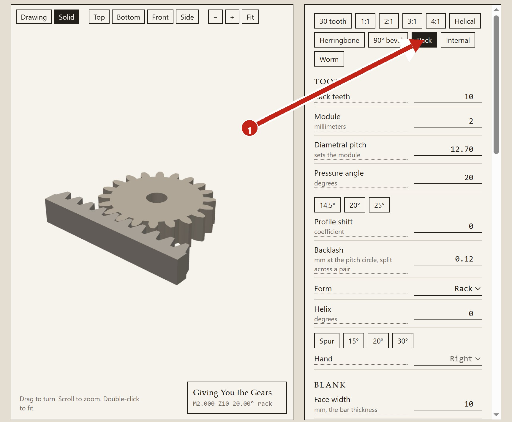
Internal ring. Press Internal. The pinion sits inside the ring, and both shafts turn the same way. The ring's teeth point inward. Its outside is a rim. The file name starts with ring.
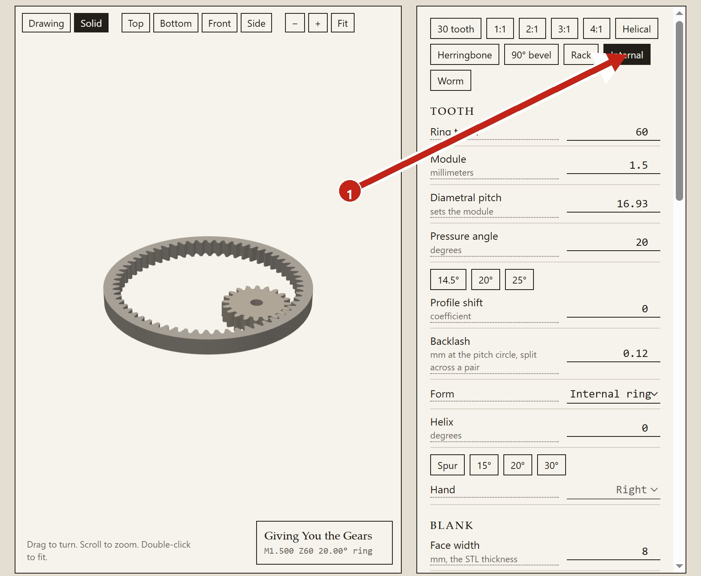
Worm. Press Worm. One start into 30 teeth is 30:1. The screw lies on its side in the STL. Its file starts with worm, and the wheel's file starts with wheel. A single-start worm usually stays put when the wheel tries to turn it backward. The notes say so. The save stays available.
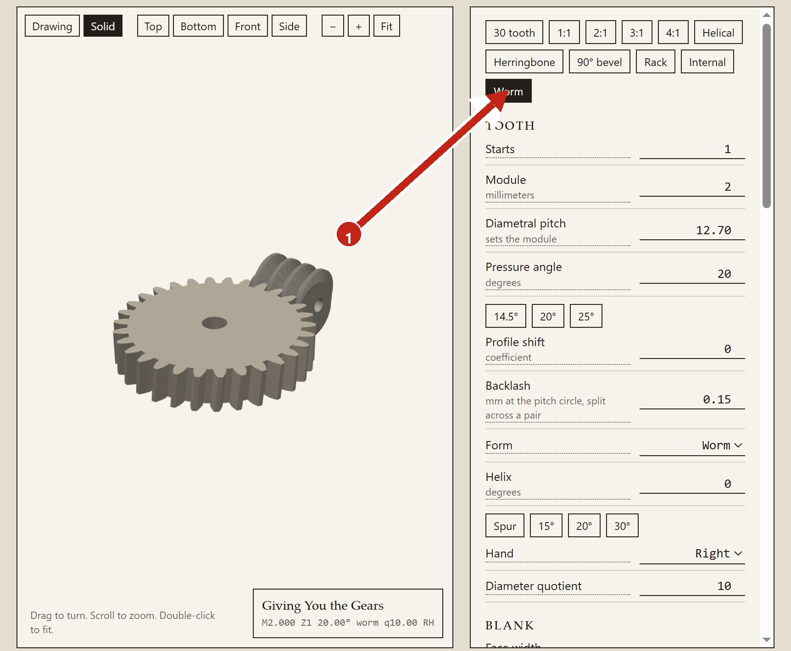
A round hole needs a set screw. Polygon with 6 sides is a hex measured across the flats. Solid leaves no hole. The hole stays straight through the part, including on a helix and a bevel.
Turn an STL into a cutting drawing
Double-click stl-to-svg.html, in the same folder as the editor. Nothing extra is installed. The page opens from the disk. It writes an SVG for Makera Studio. The spindle checklist above is for NC files from the editor. Dotted names explain themselves. Paper, Dark, Warm summer, and Cool autumn match the gear page.
Press Load STL, or press Sample ornament. The sample is a 50 mm disk, 1.25 mm thick, with a through hole, a loose inner disk, and a recess that stops partway through the sheet.
- Press Top so the red slice lies in the sheet. Drag the solid to look around. Use this view locks the slice to the direction you are looking.
- Leave the slice in the middle of a 1.25 mm ornament. A through hole stays. A recess that does not go through disappears. Move the slice near a face and generate again when you want to see which openings are only decorative.
- Leave gap repair at 0.05 mm for intricate work. The page lists every gap and waits. Joining a gap closes the outline. Joining a real slot removes that opening.
- Press Generate cutting pattern. Pale is the acrylic that stays. Warm gray is what the cutter removes. Amber is a piece that comes loose once the cut around it is made. A dashed red line is open, and it is left out of the file.
- Press Export SVG. Every path is closed. The width and height are millimetres, and 1 unit in the file is 1 mm. In Makera Studio, confirm the imported width matches the size on the page before you cut.
The path is the centre of the cut. The file does not offset for a bit. Scale 1 keeps the STL's own millimetres.